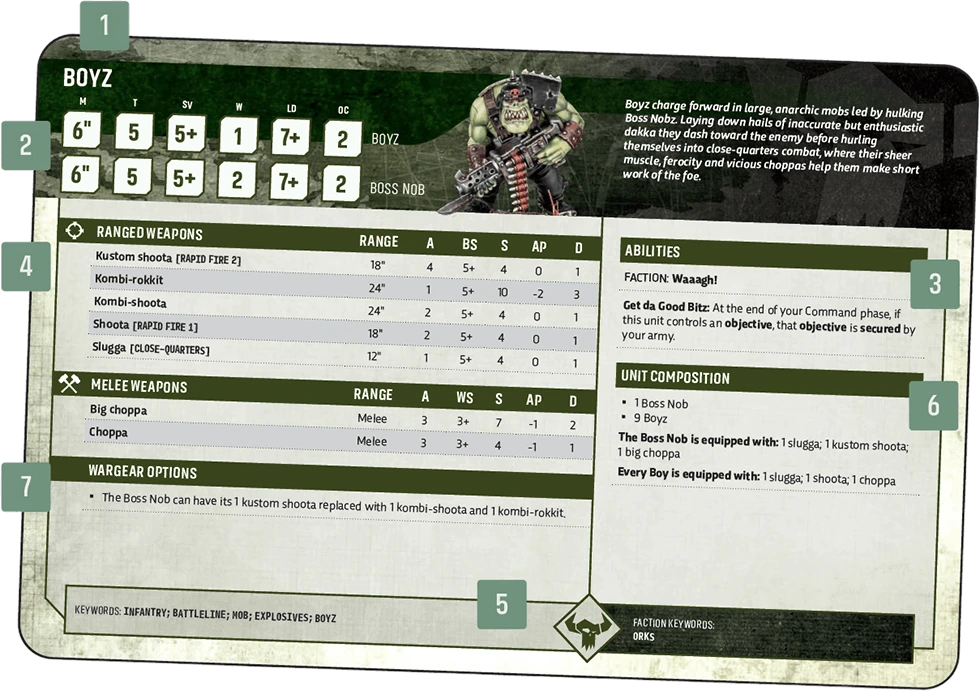

1. Datasheet Name
Digital 11EHere you will find the name of the unit.


Datasheet Name and Keywords
Digital 11E
As well as the keywords listed in each datasheet’s Keywords section, each acts as an additional keyword for that unit.
Profiles, abilities, weapons, keywords, unit composition and wargear options.
Here you will find the name of the unit.

As well as the keywords listed in each datasheet’s Keywords section, each acts as an additional keyword for that unit.
These contain the following characteristics that tell you how mighty the models in the unit are:
(M): The speed at which a model traverses the battlefield. If a model has an M characteristic of ‘-’, it can be set up on the battlefield but otherwise cannot be moved.
(T): The model’s resilience against harm.
(Sv): Presented as a dice result (e.g. 4+), this indicates the protection a model’s armour gives it.
(InSv): Presented as a dice result (e.g. 4+). Some models are protected by esoteric means in addition to physical armour, such as force fields or preternatural reflexes. Not all models have an InSv characteristic, but if they do, it will be listed here.
(W): Wounds represent how much damage a model can sustain before it is destroyed. If a model’s wounds are reduced to 0 or fewer, that model is destroyed.
(Ld): Presented as a dice result (e.g. 7+), this reveals how courageous, determined or self-controlled a model is.
(OC): How effectively a model can control an objective on the battlefield. If a model has an OC characteristic of ‘-’ it is unable to control objectives at all.
PROFILES AND WEAPONS
WHAT ARE MODIFIERS?
Many rules in the game modify a value, characteristic or roll elsewhere in the game. A rule that does so is known as a modifier. A value that has been changed is a modified rule (for example, a modified characteristic, modified roll or modified value).
One of the most common ways for modifiers to be presented is as +1 or -1 to a characteristic, roll or value.
If a rule has +1 to a characteristic, it improves it by the value after the ‘+’ symbol. For example, ‘This weapon has +1 AP’ would improve an AP characteristic of -2 to -3.
If a rule has -1 to a characteristic, it worsens it by the value after the ‘-’ symbol. For example, ‘This unit has -1 Sv’ would worsen a Sv characteristic of 3+ to 4+.
When Modifying Characteristics
When modifying characteristics, unless otherwise stated, the following points also apply:
When these terms are used in rules, the affected characteristics are being modified, and the following points apply:
Some rules enable a player, weapon, model or unit to ignore modifiers. When using such rules, the following points apply:
Unless otherwise stated, that rule allows you to ignore modifiers to the unit’s rolls and the unit’s profile and weapon characteristics.
When a rule states you can ignore modifiers to a stated roll or characteristic, you can choose to ignore all of those , or only some of them. For example, you can still choose to apply positive/beneficial modifiers while ignoring negative/detrimental modifiers.
Example: Your unit can ignore characteristic modifiers and is under the effect of +2" M and -2" M. You can choose to ignore the -2" M, meaning that unit’s M characteristic will only be modified by the +2" M.
Example: Your unit’s ranged attacks can ignore roll modifiers and are under the effect of +1 to hit rolls and -1 to hit rolls. You can choose to ignore the -1 to hit rolls, meaning those attacks will only be affected by the +1 to hit rolls.
: When a unit with a random M characteristic is selected to move, determine the entire unit’s move distance by rolling the indicated number of dice.
Random Attacks: If a weapon has a random A characteristic, that characteristic is determined when generating attacks for that weapon at the step. If several weapons with random A characteristics are making , generate the attacks for each of those weapons individually, and group them all together.
Random Damage: If a weapon has a random D characteristic, then each time an attack made with it inflicts damage, the controlling player determines that weapon’s characteristic when the opposing player has selected a model in the target unit to allocate that attack to.
When determining a random D characteristic, the dice roll made is called a damage roll.
Where a D characteristic includes an operator (e.g. a ‘+’, as in D6+1), the value after the operator is part of that D characteristic – it is not a modifier.
Other Random Characteristics: For all other characteristics, roll to determine the value on an individual, per-model or per-weapon basis each time that characteristic is required.
When a unit heals or regains a number of wounds, it regains up to that number of lost wounds. For each wound healed or regained, consult the following:
This cannot cause a model to have more wounds remaining than it started the battle with.
If a rule states that a model heals or regains a number of wounds, only that model can regain wounds up to its starting number of wounds. Any excess regained wounds are lost and do not cause a destroyed model from that unit to revive.
A model has its full wounds remaining if it has the same number of wounds remaining as its W characteristic.
See .
Many units have abilities that may apply during the game. These will be described here.
Some rules have multiple conditions, with the second, more specific condition conferring an improved rule, either instead of the first condition’s rule or as well as it. Such rules require both the first condition and the second condition to be satisfied for the improved rule to apply.
For example, an ability reads: ‘This unit’s ranged attacks that target the closest eligible target can:
In order for those attacks to re-roll hit rolls, that target must be both the closest eligible target and within range of an objective your opponent controls.
Weapons have the following characteristics:
(R): How far ranged weapons can shoot. Weapons with an R characteristic of ‘Melee’ are melee weapons.
(A): How many attack dice are used each time that weapon is used.
(BS): Presented as a dice result (e.g. 4+), this shows how accurate the is when shooting with the relevant ranged weapon.
(WS): Presented as a dice result (e.g. 4+), this reflects the bearer’s skill in wielding the relevant melee weapon.
(S): The higher a weapon’s S characteristic, the more likely it is to wound a foe.
(AP): Presented as a modifier to a dice roll (e.g. -1). The larger the modifier, the better the weapon is at cutting through the target’s defences.
(D): The amount of damage inflicted by an attack.
If a weapon has no S characteristic (because it is ’-’, or for any other reason) and a rule interacts with that weapon’s S, that weapon has S 1 for that interaction.
Datasheets have a list of keywords, separated into faction keywords and other keywords. The former are used when deciding which models to include in your army, but otherwise both are functionally the same. Keywords appear in full capitals, in KEYWORD BOLD.
Some rules are linked to one or more keywords. For example, a rule might say that it applies to INFANTRY units. This means it only applies to units that have the INFANTRY keyword. Singular and plural instances of the same keyword function in the same way.
When using keywords, the following points apply:
This section details the number and types of models in the unit. Each of those models will have one set of default wargear, which will be listed here. It may also list other rules, such as which units a unit can join or which units can embark within a TRANSPORT.
The bearer of a weapon, enhancement or item of wargear is the model equipped with it.
When a rule refers to a unit’s equipment, it refers to all of the wargear equipped by models in that unit.
Some datasheets have a list of wargear options. When you include such a unit in your army, you can use these options to alter the weapons and other wargear its models have.